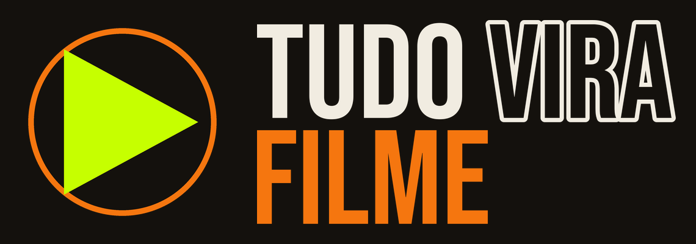
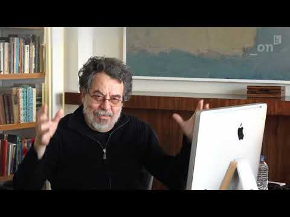
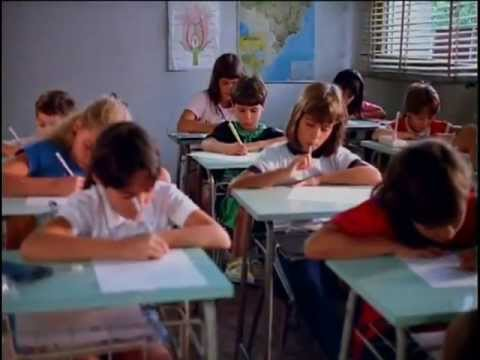
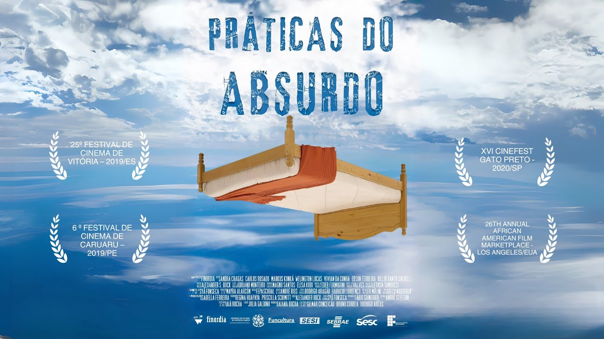

ANTES DE FILMAR,
ALGUÉM ESCREVE
Hoje é só papel de novo, e é a última vez. O que vocês escreverem hoje é o que a gente filma na próxima.
O QUE FICOU
DE QUARTA?
Do Kuleshov, do André, ou da ideia de que o sentido nasce entre dois planos. Uma coisa só.
ROTEIRO NÃO É LITERATURA
Tudo da coluna da esquerda funciona num livro, porque quem lê constrói a imagem sozinho. Nenhuma delas dá pra filmar.
AS TRÊS ARMADILHAS DE QUEM COMEÇA
CADA LINHA É UMA ORDEM PRA ALGUÉM
Diante do psiquiatra, Letícia acaba de relatar seu drama.
CENA É UM LUGAR,
UM TEMPO, UMA COISA
QUE ACONTECE
MOSTRAR, NÃO EXPLICAR
A GAVETA
Dora escreve cartas para analfabetos na estação. Depois ela leva as cartas pra casa, lê em voz alta pra uma amiga, e joga numa gaveta. As cartas nunca são postadas.
PRÁTICAS DO ABSURDO
CENA 01
Melhor roteiro no Cine Veracruz, em Goiás. São micro-histórias que se costuram pra falar de uma coisa só. A gente vai ler a primeira em voz alta, antes de ver qualquer imagem.
- 01DOIS LEEM, EU LEIO A AÇÃO Alguém faz a Letícia, alguém faz o psiquiatra. Lê como quem conversa, não como quem declama.
- 02REPAREM NO QUE NÃO ESTÁ ESCRITO Em nenhum lugar diz que ela está desesperada, nem que ele não acredita. Isso tudo está só no que eles fazem e falam.
- 03GUARDEM A IMAGEM QUE VOCÊS MONTAREM Daqui a pouco a gente compara com a que eu filmei. Não vai ser igual, e isso é a parte interessante.
TRÊS PÁGINAS, CINCO PLANOS
O P02 e o P03 se revezam o diálogo inteiro. Não é um plano por fala. Cada vez que o roteiro volta pra ela, volta pro mesmo plano, rodado na mesma hora.
A LINHA DOS 180 GRAUS
PASSA O FILME
A pergunta pra fazer depois: o que apareceu na tela que não estava escrito em lugar nenhum? A cor da parede, a luz do abajur, o jeito que ela senta. Nada disso estava no roteiro, e tudo isso é decisão de alguém.
O FILME INTEIRO NO YOUTUBE uQgC-AxzBdEO QUE FAZ ESSA CENA ANDAR
SER ACREDITADA Não quer ser curada, nem explicada. Ela quer que uma pessoa, uma só, olhe e diga: eu vi.
QUE É METÁFORA Ele escuta, anota, e transforma em diagnóstico. Quanto mais ele tenta ajudar, mais ela some.
É isso e só isso que segura três páginas de duas pessoas sentadas conversando. Tira o desejo, e sobra gente falando numa sala.
MEIA PÁGINA,
UMA CENA SÓ
- 01UM LUGAR, DUAS PESSOAS Um lugar que exista de verdade e que a gente consiga usar. Duas pessoas, nem uma a mais.
- 02UMA QUER ALGUMA COISA E a outra atrapalha, nem que seja sem querer. Sem isso é conversa, não é cena.
- 03SÓ O QUE SE VÊ E SE OUVE Nada de “ele pensa”, “ela lembra”, “ele sente”. Se não dá pra apontar a câmera, reescreve.
- 04NO FIM, A DECUPAGEM Quantos planos essa cena precisa, e de onde a câmera olha em cada um. Como a gente acabou de ver.
Vocês escrevem juntos, uma cena só. Na próxima aula a gente filma ela, e cada um assume uma função no set.
MEIA PÁGINA
LÊ EM VOZ ALTA
Roteiro que não foi lido em voz alta não está pronto. É lendo que a gente descobre a fala que ninguém diria e a ação que ninguém faria.
A GENTE FILMA
O QUE VOCÊS
ESCREVERAM
Cinco pessoas, cinco funções: direção, câmera, som, arte e continuidade. Cada um assume uma, e vai pra Carteira de Realizador. A folha de hoje é o que a gente leva pro set.
ROTEIRO · O QUE VALE ASSISTIR

24:03PASSANDO PELO MEIO
Aula aberta de um dos maiores roteiristas do Brasil, o cara de Ilha das Flores. Se você for ver um só da lista, veja este.
↗ comece por este
13 minO curta brasileiro mais famoso que existe, e ele é quase todo texto. Veja depois da aula dele e repare que o filme inteiro é uma coisa escrita ganhando forma.
↗ o filme dele
15:47O filme inteiro, não só a cena que a gente viu. São cinco histórias costuradas, e vale ver como uma puxa a outra sem ninguém explicar nada.
↗ o resto do filmeTRÊS TREINOS DE ROTEIRISTA
O terceiro é o que mais rende e o que ninguém faz. Cinco minutos por dia, por uma semana, e a sua página muda de qualidade.